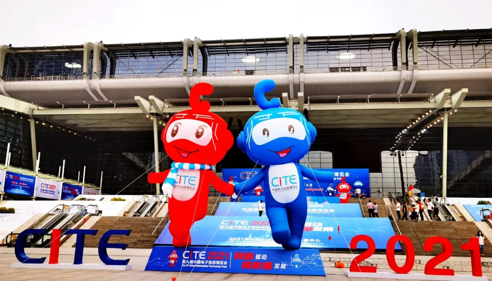
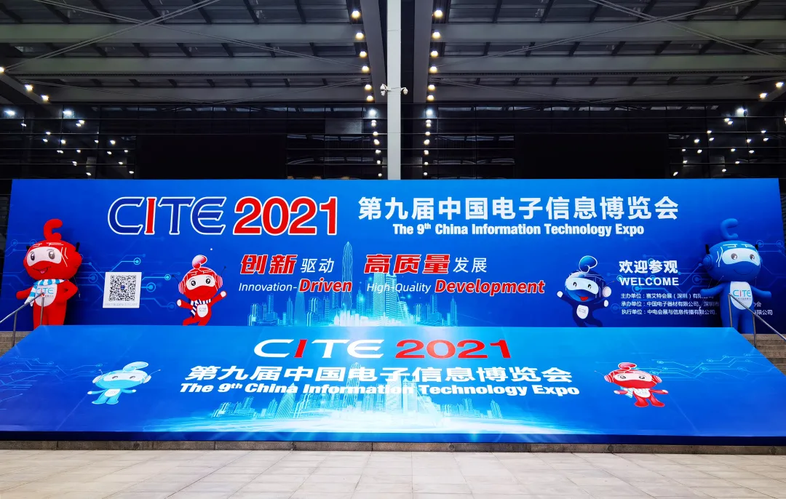
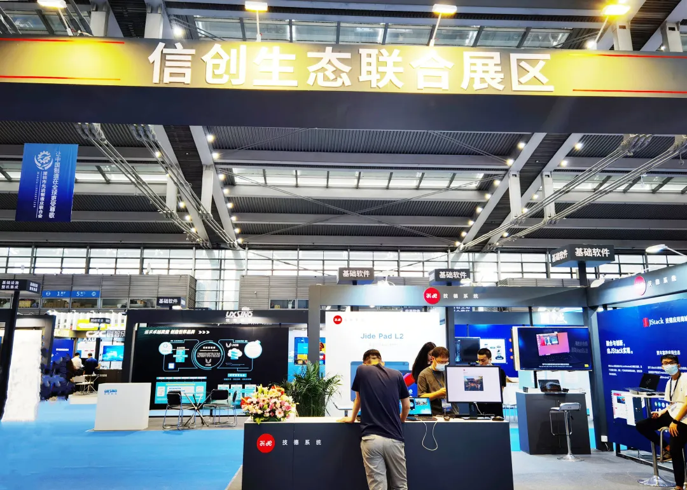
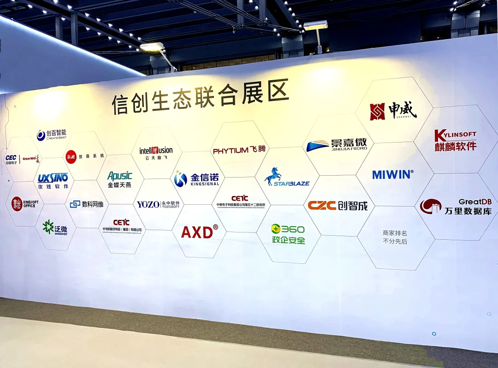
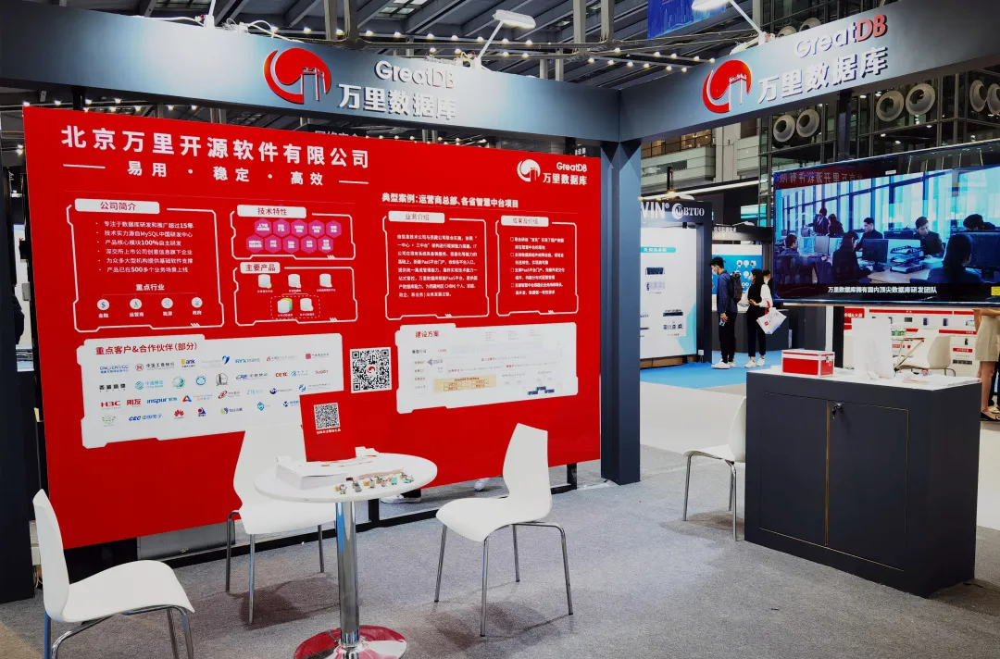

展会 | 数据可信 创变未来——万里数据库亮相2021CITE首届信创生态展区
4月9日，以“创新驱动 高质量发展”为主题的2021中国电子信息博览会（简称CITE）在深圳会展中心正式开幕，展会盛况空前，荣登新闻联播。
★
PIC
2021CITE荣登4月9日晚新闻联播
此届CITE大会由工业和信息化部与深圳市人民政府联合举办，打造国家级电子信息全产业链展示平台，开设9大展馆，汇聚华为、中电子、中国移动等1500+国内外优秀参展企业，集中展示代表电子信息产业未来发展的数十万新产品和新技术，吸引专业观众超10万+，规模、影响力远超往届。
2021CITE


因信创是解决我国信息化本质安全问题，带动传统 IT 信息产业转型，促进我国数字化转型、提升产业链发展的关键战略举措，大会首次开设信息技术创新应用产业大会。万里数据库作为国产分布式数据库代表企业，携公司多款主要产品亮相CITE大会首届信创生态展区，与众多国内产业链优秀厂商同台论道，助推信创发展实现新跨越。


信创生态展区
Exhibition
本次2021CIT旨在充分展示智能时代电子信息产业最新发展成果与趋势，打造国际化一流电子信息领域展示平台。展会期间同期举办50多场行业论坛及直播活动等，邀请工信部原副部长杨学山、中国工程院院士高文等业内顶级大咖参与交流、思想碰撞，共话行业机遇与产业发展。同期举办的首届信息技术创新应用产业大会，以“突破核心技术，构建自主生态“为主题，齐集中国信息产业商会会长聂玉春、深圳市领导、中国工程院院士沈昌祥等权威领袖，为信创产业发展指明未来发展方向。
多款产品亮相展会
全面展示万里数据库发展成果及应用实践
本次展会中，万里数据库携公司多款主要产品与麒麟软件、天津飞腾一同亮相大会信创展区，全面展示公司在国产数据库上的发展成果及应用实践。

★
PIC
万里数据库展位
GreatDB分布式
原生分布式关系型数据库软件，具有动态扩展、数据强一致、集群高可用等特性，广泛应用于金融、运营商、能源、政府等行业核心系统，并全面兼容国产软硬件生态；
GreatDB集中式
自主研发集中式数据库，基于数据冗余与副本管理确保数据库系统稳定可靠无单点，并提供完备事务支持，适用于要求苛刻的在线事务处理（OLTP）应用场景；
目录服务系统GreatD
遵守轻型目录访问协议（LDAP V3），完全满足PKI/CA 领域应用需求，稳定可靠，广泛应用于大型企事业单位身份标识管理系统中；
云数据库服务平台GreatDB RDS
实现了跨 IaaS 环境下数据库集群全生命周期的运维管理与服务编排，降低业务运行成本，保障系统安全可靠，协助运营商和企业构筑安全、绿色、节能的云数据库中心。
采访+参展多箭齐发
万里品牌强势占位
展会期间，万里数据库业务专家接受专题采访，向与会观众阐述万里数据库的核心产品、业务领域应用实践及公司近期的发展亮点与里程碑事件，为大家展现出一个更加丰富立体、专业奋进的万里数据库。
★
PIC
业务专家接受展会方专访
参展期间，作为国产分布式数据库代表企业，万里数据库的产品及落地实践成果受到与会嘉宾的高度关注。来自不同行业的企业级、个人用户纷纷驻足万里数据库站台，近距离听取业务专家介绍国产分布式数据库的特性并探讨资源合作、产业协同，积极为信创产业生态贡献智慧与力量。
展位交流
SHOTS
信创生态风起云涌
万里积极助推信创产业发展
信创产业生态建设为国内数据库产业发展带来绝佳机遇。在信创领域，万里数据库积极耕耘，成效显著，不仅与国内众多软硬件厂商完成产品兼容认证，实现了芯片、操作系统到应用软件的全方位兼容适配工作，并积极推动行业信创产业发展。
金融行业，与光大基于万里数据库源码联合研发EverDB数据库，应用于光大核心应用系统，助推金融信创产业发展；并先后中标央采、中移动、联通沃音乐等项目大标，助力政府、运营商等行业信创事业再上一层楼。
未来，万里数据库将继续秉持“积极合作 协同共赢“的合作原则，整合上下游生态伙伴资源，助推国产化技术创新机制，完善信创产业生态，从而支持更多行业企业、政府、机构实现数字化转型升级，推动中国数字经济快速发展。
2021CITE
中国电子信息博览会打造了国家级电子信息全产业链展示平台乃至亚洲规模最大的电子信息综合型博览会，首届信创大会意义重大、备受瞩目。万里数据库愿与广大生态伙伴及大咖领袖一同，为推动信创产业发展贡献力量，为实现中国数字经济快速发展再添新绩！
推荐阅读1.展会 | 叮！万里数据库向您发出一封2021中国电子信息博览会邀请函~
2. 生态 | 万里数据库与麒麟软件达成战略合作 开启生态共荣新篇章！
3. 生态 | 万里数据库与电科云系列产品完成兼容互认证


扫码二维码
关注公众号